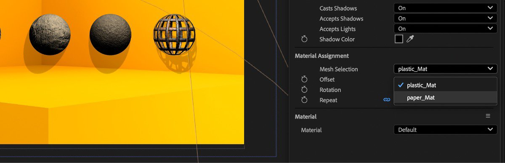

Adobe After Effects supports the use of SBSAR files, so you can apply materials to your 3D objects with all the custom parameters that the SBSAR format supports.
You can learn more about how to use SBSAR files in After Effects here.